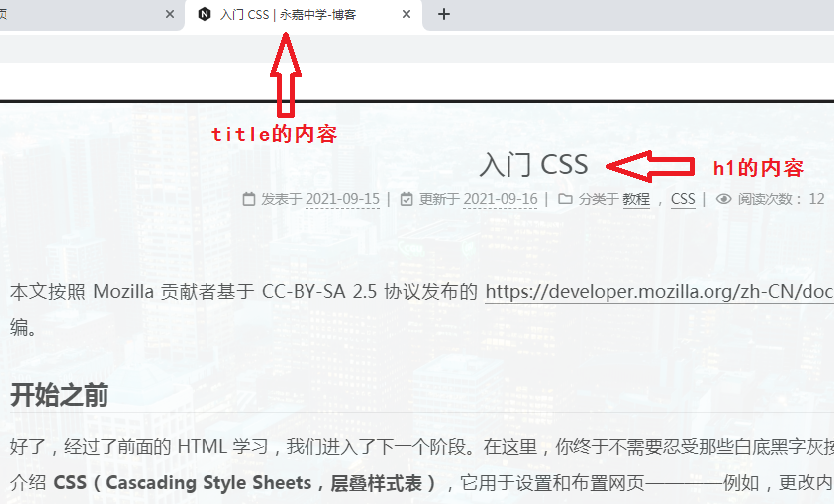
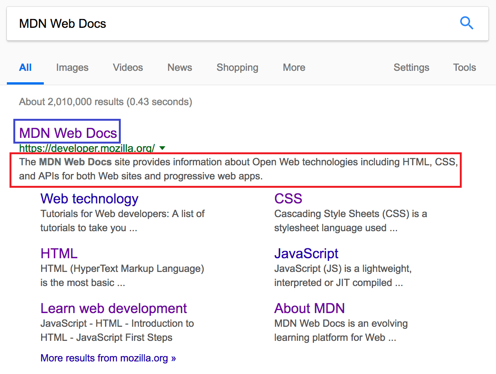

HTML：5——头部元素
本文按照 Mozilla 贡献者基于 CC-BY-SA 2.5 协议发布的以下文章改编:
之前我们学习的时候，利用VSCode的自动补全弄了一段很长的生成的代码，大部分都是<head>里的内容。现在就让我们详细讲讲这里的内容。
虽然这里的东西大部分不会给用户看到，但它们依然是举足轻重的。让我们一行行看下来。
<!DOCTYPE html>：文档类型
（叹气）这玩意吧，其实是历史遗留了，现在反正也没啥用。不过最好加上去就完事了。
<html lang="en">：主语言
这句话的意思是设置主语言为英文。你可以把它改成<html lang="zh-CN">，这样就是简体中文了。
这在很多方面都很有用。如果你的HTML文档的语言设置好了，那么你的HTML文档就会被搜索引擎更有效地索引 (例如，允许它在特定于语言的结果中正确显示)，对于那些使用屏幕阅读器的视障人士也很有用(比如， 法语和英语中都有“six”这个单词，但是发音却完全不同)。浏览器能更好地识别网页的语言，也就能更好地为用户提供机翻。
你还可以将文档的分段设置为不同的语言，使用的是<span>元素。例如，我们可以把日语部分设置为日语，如下所示：
1 | <p>日语实例: <span lang="jp">ご飯が熱い。</span></p> |
<meta>：元数据
元数据就是描述数据的数据。<meta>就可以用来添加元数据。
<meta charset="UTF-8">：指定字符集
之前我们的基础教程里讲了编码，也就是现在说的字符集。UTF-8是现在做网页最常用的字符集（最好不要用别的）。这句话的意思就是指定字符集。
<meta http-equiv="X-UA-Compatible" content="IE=edge">
（叹气）众所周知IE是垃圾浏览器，这句话就是为了给IE垃圾浏览器做兼容用的。反正是生成的，别动它，留着就完事了。
<meta name="xxx" content="xxx">
许多<meta> 元素包含了name 和 content 特性：
name 指定了meta 元素的类型； 说明该元素包含了什么类型的信息。
content 指定了实际的元数据内容。
比如下面的一个例子指定了作者：
1 | <meta name="author" content="GCVillager"> |
还有一个例子，可以认为是对页面的简要描述：
1 | <meta name="description" content="The MDN Learning Area aims to provide |
你还可以定义各种各样的元数据。
如果你学过一门编程语言的话，就会觉得，这有点像是author="GCVillager"之类的表达式。（这句话看不懂就算了）。
指定包含关于页面内容的关键字的页面内容的描述是很有用的，因为它可能或让你的页面在搜索引擎的相关的搜索出现得更多。（内卷！）
<title>：标题
这个标题是浏览器的标签页上的那个标题，不是用<h1>写的标题。如图所示：

它的<head>元素里面，就有这样一句话：<title>入门CSS | 永嘉中学-博客</title>。收藏页面的时候，默认的标题也是<title>里的内容。
然后现在我们看一下，比如说在Google上搜MDN的时候，就会出现<title>里的内容（蓝色方框），还有名称为discrption的元数据的内容（红色方框）。或者你在QQ里分享的时候也会差不多。所以写这些是值得的。

除了VSCode自动生成的那些东西，还有一些别的。请看——
添加自定义图标
从标签页上面就可以看到，到目前为止，你的网页还没有图标。这未免有些丑。
示例如下：
1 | <link rel="shortcut icon" href="favicon.ico" type="image/x-icon"> |
rel属性向浏览器说明文件的类型，方便它处理；href属性指向一个链接（和<a>元素很像），这里是你的图标的链接，可以是任意链接（相对或者绝对路径）。
至于这个文件格式，ico就是图标用的格式。其实你可以用别的格式，比如最常用的png，但是在某些年代久远的IE浏览器上，png格式的图标不一定能显示。
如果要使用png格式的图标，就可以像这样做：
1 | <link rel="shortcut icon" href="https://developer.mozilla.org/static/img/favicon32.png"> |
另外，收藏夹里看到的图标也是这里指定的图标。
应用CSS
虽然我觉得GXH的教程里大概会讲，但是为了避免他说我没讲，要骂我，再加上后面要用到，还是要讲一下。
1 | <link rel="stylesheet" href="my-css-file.css"> |
注意：这一句依然要写在head里。 同理，rel="stylesheet就是说文件类型，href写的还是文件链接。用它引入CSS之后，页面就能根据CSS的要求渲染了。比如说我们上次写的那句：
1 | <p>这是一段<span class="red">奇怪</span>的文字，<span class="hide">这里你是看不见的</span></p> |
加上了对应的CSS之后，就能正确显示了。
点击这个链接下载CSS文件，将它与你要写的HTML放在同一个文件夹里。然后用link语句链接进来。至于应该怎么写，你自己想想——其实模仿着写就对了。
然后再把那段HTML代码复制进去，就可以看到上次那张图片里的样子了。
应用Javascript
也是写在head里。这样引入一段写在外部文件里的脚本：
1 | <script src="my-js-file.js"></script> |
这里的src是source的缩写，和href其实有点像。注意，<script>并不是空元素，所以要有闭合标签。
还有一种方式引入Javascript，就是直接写在里面：
1 | <script> |
刚刚写在里面的就是一段Javascript代码。（至于JS代码怎么写，就是以后的事情了）
GCV写累了，表格我们下次再说。